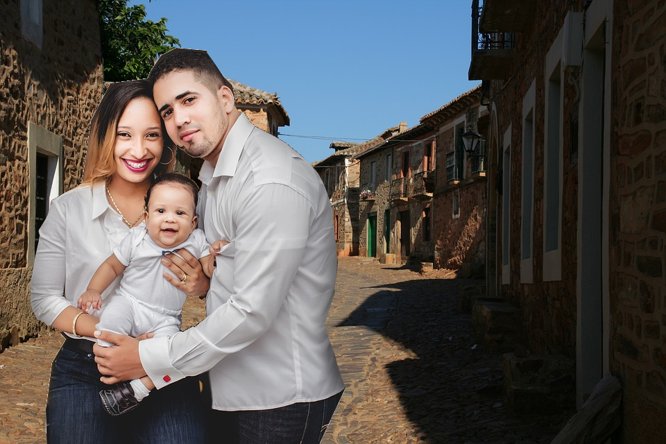

Crisol de culturas segoviano junto a la autovía
En el nordeste de Segovia, a menos de hora y media en coche desde Madrid, se encuentran Boceguillas y Grajera. Su ubicación como punto clave de comunicación entre el centro y el norte de España –a mitad de camino entre Madrid y Burgos– ha marcado su historia. Aunque pertenezcan a la 'España Vacía' como parte de la llanura castellanoleonesa, estos dos municipios de la Comunidad de Villa y Tierra de Sepúlveda no están vacíos en absoluto. De hecho, la densidad de población en Boceguillas es de 17,8 habitantes por kilómetro cuadrado, y en Grajera es algo mayor, 18,3.
Tampoco están aislados. Su cercanía a la autovía A-1 les ha dado cierto dinamismo económico y los ha convertido en focos de atracción para la inmigración extranjera, que en Boceguillas representa más del 33% de la población (252 de los 754 habitantes empadronados) y en Grajera supone casi el 31% (72 de 233).
Pese a su reducido tamaño, ambos municipios pueden presumir de tener una población joven y de haberse convertido en crisoles de culturas. Por sus calles pasean marroquíes, búlgaros y rumanos, principalmente, pero también se escuchan acentos de Portugal, Ecuador, Brasil o República Dominicana.
Los vecinos de Boceguillas dicen que la convivencia en el pueblo es buena, que nunca ha habido problemas entre los nativos y los que llegaron desde el extranjero. Sin embargo, para ser un pueblo que ni siquiera alcanza los mil habitantes, llama la atención el desconocimiento existente entre algunos de ellos, una circunstancia que resulta especialmente evidente con la comunidad marroquí.
“Se juntan entre ellos”, “son raros, raros”, comentan varios vecinos españoles, quienes añaden que, por lo general, el grado de integración de los rumanos, búlgaros, latinoamericanos y portugueses es mayor que el de los marroquíes.
Esto puede deberse en parte al carácter poco integrador de este municipio. “Vamos un poco a lo nuestro” y, además, “no hay mucho arraigo”, admite Cristina, una vecina. Los boceguillenses o pilongos no hacen mucha vida de pueblo y sorprende, por ejemplo, que la plaza donde se encuentran el ayuntamiento y la iglesia no sea un centro de socialización y encuentro como ocurre en muchos municipios pequeños.
Desde el colegio y los servicios sociales se trabaja por la integración de los extranjeros, ayudándoles a aprender español o a mejorarlo y organizando cursos de formación y otras actividades. Pero a veces estos esfuerzos no cumplen su objetivo ya que, sobre todo en el caso de los marroquíes, muchos de quienes asisten a los cursos los abandonan prematuramente.
Mientras, la comunidad marroquí mantiene costumbres y formas de vida muy distintas a las de los boceguillenses nacidos en España, que raramente se encuentran a un musulmán en un bar. Precisamente, nuestra visita a Boceguillas se produce el sábado en el que comienza el Ramadán, un momento de recogimiento en el que muchos de los vecinos musulmanes reposan en sus casas para no gastar energías durante el día, esperando el momento en que se ponga el sol para juntarse en grupos numerosos y romper el ayuno con una copiosa cena.
Los vecinos españoles también observan con estupor cómo algunas chicas muy jóvenes se marchan a Marruecos y al regresar al pueblo lo hacen ya como mujeres casadas y habiendo cambiado radicalmente de vida.
Tampoco se ha normalizado del todo la presencia de una mezquita en el Hotel Tres Hermanos, construida después de que, hace unos años, el negocio cambiara de propietarios. Desde fuera, el edificio podría parecer un establecimiento hostelero de una carretera cualquiera, hasta que uno se acerca y ve los carteles escritos en árabe. Algunos vecinos dicen que, según se rumorea, hay otra mezquita en lo que antes era una pequeña tienda de ultramarinos, pero no lo saben a ciencia cierta porque nunca han entrado.
En busca de los boceguillenses venidos de fuera, encontramos a dos mujeres ataviadas con velo y ropa tradicional marroquí de colores oscuros, que caminan bajo el intenso sol del mediodía en un mes de mayo prácticamente veraniego. Sus rostros curtidos pueden hacer pensar que tienen más años de los que realmente han cumplido. Al acercarnos a ellas nos dicen, con una sonrisa a modo de disculpa, que no hablan castellano, aunque llevan varios años residiendo en España, y nos conducen hasta la puerta de una casa. Es un bloque de edificios grises y antiguos, como los que se construían en los barrios obreros durante el franquismo, situado en un extremo del pueblo.
Por el balcón de la casa se asoma Geznani, tangerina de 26 años, que, pese a su juventud, tiene tres hijos a su cargo. Está casada con su primo, que no pasa mucho tiempo en Boceguillas porque es camionero y viaja a menudo a Murcia. Geznani, que convive con su hermano, su cuñada y sus sobrinos, llegó a España hace once años y, aunque vive en el pueblo desde hace solo unos meses, tiene claro que quiere quedarse. “Aquí estoy muy a gusto”, asegura.
Aún no conoce mucho a sus vecinos, ni siquiera a los marroquíes, porque prefiere no meterse “en la vida de los demás”, pero añade: “Nadie me ha mirado nunca mal, si nos vemos por la calle nos saludamos”. Geznani es ama de casa, al igual que muchas de sus compatriotas en Boceguillas ya que, por una cuestión cultural –proviene de la región del Rif, más conservadora que otras zonas de Marruecos–, se considera que son los maridos los que deben aportar los ingresos al hogar. Unos son albañiles, otros se dedican al campo y otros están parados.
Otros extranjeros, como los latinoamericanos y los procedentes de Europa del Este, trabajan principalmente en la hostelería, un sector que se ha desarrollado especialmente gracias a la cercanía de la autovía, aunque antes de la crisis inmobiliaria la actividad económica que atrajo más inmigración fue la construcción.
Uno de esos inmigrantes es Gheorghe, un rumano que se trasladó a España para trabajar de albañil con su primo, aunque ahora se gana la vida conduciendo un camión. Él y su mujer Roxana, panadera, nos cuentan su experiencia mientras tomamos un aperitivo en el chalet adosado de Cristina y Sergio, sus vecinos.
Llevan unos diez años en Boceguillas y, aunque se sienten bien aquí y tienen amistades, admite que alguna vez le han acusado de intentar “quitar el trabajo a los españoles”. También deja entrever cierta insatisfacción cuando piensa en el futuro de su hija, a la que cree que, al final, el pueblo se le quedará pequeño.
A pesar de la escasa integración que existe en algunos casos, en Boceguillas hacen un balance positivo de la amplia presencia de extranjeros entre su población, que ven como una riqueza de la que sentirse orgullosos. “Nos hace más abiertos de mente”, opina Verónica, profesora en el colegio de educación infantil y primaria Cardenal Cisneros.
Además, creen que la distancia que separa a unos y otros se irá reduciendo poco a poco gracias a las generaciones más jóvenes, más acostumbradas que la de sus padres a la mezcla de distintos acentos y colores de piel. De hecho, en algunas aulas del colegio los niños españoles son minoría, aunque esta circunstancia les parece irrelevante porque las diferencias con sus compañeros, que para los adultos resultan tan evidentes, ellos no las ven.
Desde un punto de vista más pragmático, los boceguillenses reconocen que si no hubiera sido por la llegada de la inmigración, algunos servicios públicos habrían desaparecido. “La poca vida que queda en el pueblo es gracias a ellos”, comentan.
A algo más de cinco minutos en coche de Boceguillas, tras recorrer 6 kilómetros de carretera en medio de la llanura, está Grajera, que presenta un sorprendente dinamismo para un municipio tan pequeño. Conscientes de su privilegiada ubicación junto a la A-1, los grajos han montado todo tipo de actividades de ocio, desde un parque multiaventura hasta un centro ecuestre, pasando por una bolera y un campo de golf, convirtiendo a su pueblo en un destino de turismo rural, escapadas de fin de semana y despedidas de soltero. Con tanto trasiego, las casas tradicionales no bastaban para acoger a tantos visitantes; por eso se construyeron modernas urbanizaciones de chalets que pueden alojar a unas 400 personas.
La alcaldesa, Alba Barrio, aún no alcanza la treintena, pero ha sucedido en el cargo a su padre, que lo ostentó durante tres décadas. Con ella y con varias jóvenes concejalas charlamos relajadamente en la plaza del pueblo, donde lamentan que no se aproveche al máximo el potencial de Grajera, según ellas, porque en España los pueblos “están olvidados de la mano de dios”. Pero eso no ha impedido que Tania, una de las ediles, eligiera volver al pueblo, con un puesto de trabajo en el Ayuntamiento, tras haber vivido en Madrid. “Allí, en año y medio ya hice todo lo que tenía que hacer”, comenta.
También muchos inmigrantes han encontrado una forma de ganarse la vida en Grajera, bien en los negocios turísticos, bien como pastores, agricultores o peones. Al igual que en Boceguillas, cuando preguntamos por el grado de integración, nos responden que depende del colectivo y que “los musulmanes se juntan entre ellos”. Aunque la alcaldesa y las concejalas dicen que “en la convivencia no hay problema”, perciben “una barrera invisible” entre los marroquíes y otros vecinos que, desde su punto de vista, limita el impacto positivo de la inmigración en el pueblo. “Todo suma, cualquier tipo de cultura. Pero podría sumar más”, apuntan.
Aquí la excepción son Fátima y Aziz, un matrimonio marroquí que vive en Grajera con sus dos hijos. Fátima es una mujer cercana y hospitalaria que nos abre su casa y nos invita a probar dulces marroquíes que ha hecho ella misma con motivo del comienzo del Ramadán. “Me encanta vivir aquí”, afirma. Lleva diez años en España y no ve incompatible preservar sus tradiciones y su religión con tener un trabajo, en su caso en una residencia de ancianos, o conducir, incluso si en esto se diferencie de otras vecinas de su país.
Carlos, un portugués de mediana edad, trabajador de la construcción que emigró hace 27 años desde Braganza, también se siente como en casa. Tanto, que le propusieron ser concejal en el Ayuntamiento de Grajera y se dejó convencer. “Yo, en lo que pueda ayudar...”, dice con una sonrisa ante sus compañeras del consistorio. Otro ejemplo de integración es Leo, un ecuatoriano treintañero que trabaja como camarero en el hotel del pueblo y que, al igual que Carlos, muestra una evidente complicidad con sus amigas españolas. Después de trece años en España, tiene claro que lo suyo no son las urbes: “He sido de toda la vida de pueblo. La ciudad me agobia”, afirma.